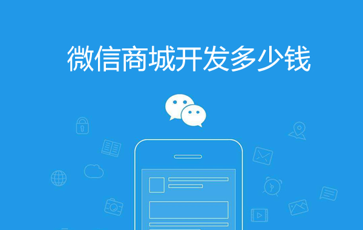
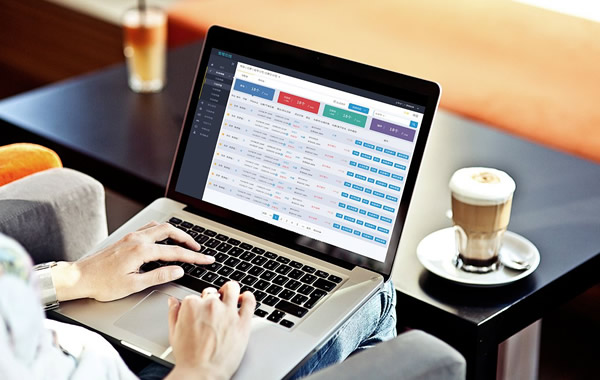
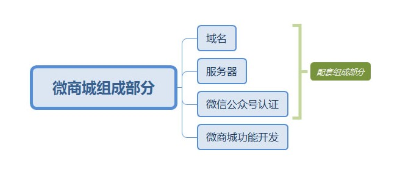
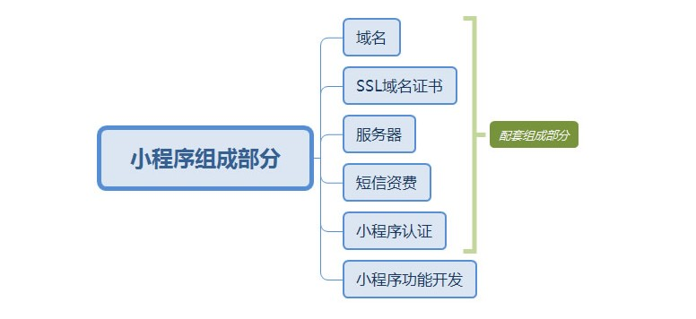

一、适用的企业类型：
一般来说，适用于品牌官网+商城网站建设这类方案的企业，本身就是有实体公司，也有本身的销售渠道，只是拓展电商销售渠道。
一般来说，有如下两种情况：
1>无品牌官网
那就企业品牌官网和商城一起建立，使用同一个后台进行管理；
2>已有品牌官网
独立建立一个b2c商城，然后在品牌官网上添加一个入口链接即可。商城是独立进行管理，和品牌官网不冲突；

品牌官网+b2c商城建设功能规划：
1>品牌官网建设
关于企业的介绍，发展历程，企业文化，规模，以及视频，荣誉等等官网介绍；
2>会员功能
会员的注册，登录，以及会员中心管理，包括订单；
备注：一般建议企业开通短信功能，这样注册用户使用短信验证码进行注册，知道会员手机号，便于后期进行会员二次营销。
3>商品功能
商品的分类设置，一般建议使用两级分类；商品的上下架，商品的筛选，商品的相册，详情以及价格设置；
4>支付功能
建议开通支付宝接口，微信支付接口即可。这两类接口都支持信用卡支付，无须单独申请银联的支付了。而且都是即时到账。目前支付宝支付无须进入企业对公账户，可以合理避税。
5>订单功能
用户付款后，产生的订单管理。一般分为：已支付订单（用户已付款，您还没发货），已发货订单（您已发货），已完成订单（订单处理完毕）；同时订单要有打印功能，便于仓储发货；
6>物流定位
发货后，用户可在查看商品所在位置，类似于大家在淘宝购物看到宝贝的所在位置一样。这需要用到物流接口，但能增加用户的信任度；
7>积分功能
用户购买商品后，可以给予一定的积分。这可以增加用户的粘性。当然兑换的礼品建议可以是您卖的商品，也可以是一些代金劵，用于用户下次购买商品抵消一部分费用；
8>后台管理
后台管理人员的权限分配，商品添加，订单处理，广告位设置，资讯添加等等；
若朋友们在平台开发如网站，小程序以及APP上遇到问题可咨询我们微信：kjwenlc , q：3328752804

三、选择终端形式：
如果预算有限，那就开发电脑端网站+手机端网站；
建议配置:电脑端网站+手机端网站+微信公众号；
四、配套购买：
域名，服务器（根据您网站访问量决定购买什么配置），短信接口，物流接口，微信公众号的服务号， 小程序、SSL证书等
